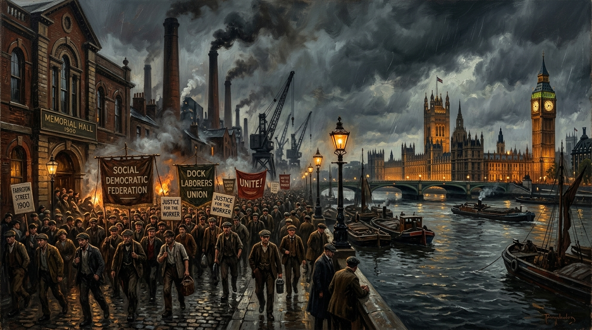

The Life and Death of the Labour Collective
From the Farringdon Street Founding to Managerial Accommodation, North Sea Oil Silence, and the Great Working-Class Exodus.

Forensic Audit: The Institutional Metamorphosis of Labour
Archival documentation, economic declassification, and demographic shifts across 126 years of British parliamentary history.
The Institutional Arc: From Representation to Administration
The historical transition of the Labour Party from an insurgent extra-parliamentary working-class movement to a custodial pillar of the Westminster constitutional apparatus.
Labour began on 27 February 1900 in the Memorial Hall on Farringdon Street in London. That meeting was called because working people had no political representation in Parliament. The Conservatives and the Liberals dominated every vote and every law, and both parties were built around property, capital, and privilege. Trade unions had grown strong enough to organise strikes and negotiate wages, but they had no direct influence over legislation. Socialists and co-operative organisers had ideas but no parliamentary voice. The working class existed inside the system but had no access to the system. The founders of Labour understood this clearly, and they acted. They created the Labour Representation Committee to force working-class interests into a Parliament that had ignored them for generations. In 1906, after winning seats and proving its viability the LRC formally became the Labour Party. That is the factual origin, the documented context, the real beginning.
Labour grew because its early MPs came from the same industries they were elected to defend. They had lived the conditions they were fighting to change. They understood exploitation because they had experienced it. They understood poverty because they had endured it. They understood danger because they had worked in it. Their politics were shaped by reality, not theory. Labour’s strength came from its connection to working people. It fought for wages, safety, housing, union rights, and public services because it knew what happened when those things were missing.
As Labour gained power, the party changed. It became more comfortable inside Parliament. It became more dependent on donors. It became more focused on elections than on workers. It became more interested in managing the system than challenging it. The party that had been created to represent workers began to speak the language of administrators. The party that had been created to confront capital began to accommodate it. The party that had been created to fight for justice began to prioritise stability. This shift was slow and structural. It happened through decisions that seemed small at the time but accumulated into a fundamental change in the party’s identity.
The silence around Scotland’s oil wealth exposed the scale of the shift. The North Sea boom was one of the largest in Europe. The revenue could have transformed Scotland’s economy, rebuilt industry, modernised infrastructure, and given working people control over the wealth extracted from their own waters. Labour knew the numbers. Labour knew the projections. Labour knew the truth. Labour chose silence because acknowledging Scotland’s wealth would have strengthened Scotland’s demand for autonomy. Labour feared that more than it feared injustice. The working class saw clearly that Labour was no longer defending them. Labour was defending the political order it had become part of.
The consequences of Labour’s drift were visible across the country. Industries collapsed. Jobs disappeared. Public services weakened. Housing deteriorated. Wages stagnated. Communities that had relied on Labour to defend them found themselves abandoned. They watched the party argue about internal factions while their own lives became harder. They watched Labour prioritise parliamentary manoeuvring over the realities of poverty, insecurity and decline. They watched the party lose touch with the world outside Westminster.
Iraq shattered Labour’s credibility. The claims about weapons of mass destruction were not supported by evidence. Intelligence was presented as certainty when it was not. The march to war was built on fear and misrepresentation. Millions marched in protest. Labour ignored them. The party that had once opposed imperialism became the party that justified it. Trust collapsed. Communities fractured. Voters walked away. Labour did not just lose support. Labour lost legitimacy.
The 2014 referendum exposed Labour’s fear of democracy. Scotland asked who decides the future of a nation. Labour chose the establishment. Labour chose caution. Labour chose the status quo. It stood with the Conservatives and argued that Scotland’s future was too dangerous to place in Scotland’s hands. When Scotland voted overwhelmingly for parties demanding a referendum, Labour refused again. Labour insisted Scotland must wait, must obey, must accept decisions made elsewhere. The party that had been created to give working people a voice refused to give Scotland a voice.
By this point Labour’s internal structure had changed beyond recognition. The party was no longer driven by trade unionists, socialists, and organisers. It was driven by careerists, strategists, and political climbers. People who saw Labour not as a cause but as a ladder. They diluted the pledges. They softened the demands. They replaced working-class politics with managerial caution. They eroded Labour from the inside. They dismantled the machinery that once defended workers. They destroyed the party’s purpose.
The working class did not drift away. They were pushed out. They were ignored. They were dismissed. They were treated as a problem rather than a foundation. Betrayal after betrayal, silence after silence, refusal after refusal, until the people who built Labour realised Labour was no longer theirs. They left for movements that defended Scotland’s right to decide its future. They left for parties that still believed in change. They left because Labour had become a party that apologised for the working class instead of representing them.
Primary Sources & Archival References
The Economics of Nationalism: North Sea Oil and Scottish Autonomy. Scottish Office Briefing to Cabinet, declassified 2005.
A Short History of the Labour Party. 11th Edition. Macmillan Press, London.
Social Background of MPs 1979–2024. Research Briefing CBP-7483. Parliamentary Information Services.
Report on the 2015 UK Parliamentary General Election in Scotland. Electoral Office, Edinburgh.